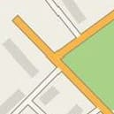
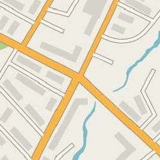
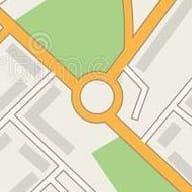
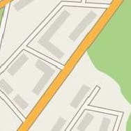
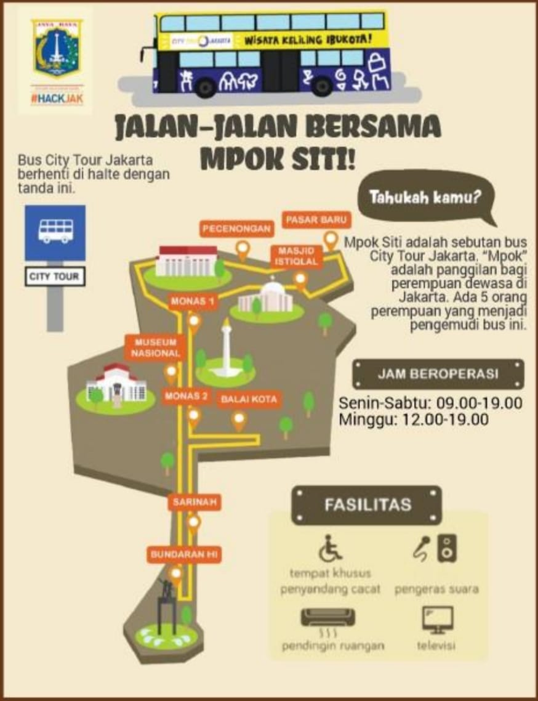

🇮🇩 BIPA 1 · Unit 8
Jalan-Jalan: Arah, Lokasi & Wisata Jakarta
🎯 Kegiatan 1 · Menanyakan & Menunjukkan Arah
Perhatikan percakapan antara seorang turis yang bertanya arah dan seorang warga setempat yang memberikan informasi.
Turis
"Permisi, Pak. Museum Nasional di mana, ya?"
"Lewat mana, ya, Pak?"
"Baik. Terima kasih, ya, Pak."
Warga Setempat
"Oh, Museum Nasional ada di Jalan Medan Merdeka Barat."
"Ibu jalan lurus saja ke Jalan Medan Merdeka Barat sampai pertigaan. Dari sana Ibu belok kanan."
💡 Ungkapan Bertanya Lokasi:
• "Museum Nasional di mana, ya, Pak?"
• "Lewat mana, ya, Pak?"
• "Ke Monas bagaimana, ya?"
• "Permisi, numpang tanya."
• "Museum Nasional di mana, ya, Pak?"
• "Lewat mana, ya, Pak?"
• "Ke Monas bagaimana, ya?"
• "Permisi, numpang tanya."
💬 Ungkapan Memberi Arah:
• "Museum Nasional ada di Jalan Medan Merdeka Barat."
• "Ibu jalan lurus saja sampai pertigaan."
• "Dari sana Ibu belok kanan."
• Belok kiri · Belok kanan · Lurus · Putaran · Perempatan.
• "Museum Nasional ada di Jalan Medan Merdeka Barat."
• "Ibu jalan lurus saja sampai pertigaan."
• "Dari sana Ibu belok kanan."
• Belok kiri · Belok kanan · Lurus · Putaran · Perempatan.
🖼️ Kosakata Penting
Gambar-gambar berikut akan membantu Anda memahami arah.

Pertigaan
Persimpangan tiga jalan

Perempatan
Persimpangan empat jalan

Putaran
Tempat memutar arah kendaraan

Lurus
Tidak belok
🚌 Kegiatan 5 · Jalan-Jalan Bersama Mpok Siti

✨ BUS MPOK SITI · CITY TOUR JAKARTA ✨
Mpok Siti adalah sebutan untuk Bus City Tour Jakarta yang dikelola oleh Pemerintah DKI Jakarta. Bus ini melewati tempat-tempat ikonik di Jakarta.
🗺️ Rute Bus
- Monas 1 & Monas 2
- Balai Kota
- Sarinah
- Bundaran HI
- Masjid Istiqlal
- Pasar Baru
🕐 Jam Operasional
- Senin–Sabtu: 09.00–19.00
- Minggu: 12.00–19.00
✨ Fasilitas Bus
- Tempat khusus penyandang cacat
- Pengeras suara
- Pendingin ruangan (AC)
- Televisi
📌 Catatan
Bus ini berhenti di halte dengan tanda khusus. Pastikan Anda menunggu di halte yang bertanda Bus City Tour Jakarta.
🏆 Skor: 0
Soal 1 / 10
Memuat soal...